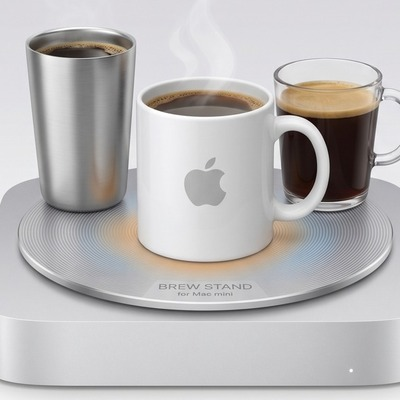

Sélection · L'app réelle

MacSlowCooker REAL · OSS
Gratuit · Apache 2.0 · Apple Silicon & Intel
Moniteur Dock-icône macOS pour GPU / température / ventilateur / consommation, avec une métaphore de marmite. Fenêtre flottante, historique 4 panneaux style MRTG, exporteur Prometheus, export PNG. Logiciel réel.
Obtenir sur GitHub Assistance →Accessoires · Parodies conceptuelles

Pour Mac Studio
Cooking Plate
Mac Studio (M1/M2/M3 Max · Ultra)
Votre Mac Studio. Désormais un appareil de cuisson.
À partir de 89 €

Pour Mac mini ×4
Cluster Edition
Mac mini (M1–M4)
Quatre Mac mini. Une plaque. Une vraie puissance de cuisson.
À partir de 189 €

Pour Mac mini
Brew Stand
Mac mini (M1–M4)
Votre Mac mini. Désormais votre barista.
À partir de 49 €
À propos de cette boutique. Tous les accessoires listés ci-dessus sont des concepts parodiques. Ils n'existent pas en tant que produits physiques et ne sont pas à vendre. Apple n'est pas affilié à cette collection. Les températures et durées indiquées sont des mesures réelles de MacSlowCooker (l'app réelle) tournant sur du matériel Mac réel — nous les avons simplement présentées comme une ligne d'appareils de cuisson. Ne posez vraiment pas d'ustensiles de cuisine sur votre Mac.
Bientôt disponibles (également pas réels)
Manchon chauffant MacBook Pro · Mac Pro Édition Fumoir · Dessous-de-plat iPad mini · Bain sous-vide AirPort Time Capsule